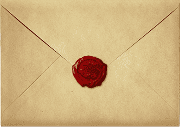

Ooiiii meu amor!!!!
Se você está lendo isso, então quer dizer que é dia 16 de Dezembro! ou seja... faltam 7 dias pro seu aniversario amor!!!!!!!!!!
E nessa semana, por uma ideia sua, eu planejei fazer algumas coisinhas especiais para esse dia tão especial pra mim ♥. Você é a pessoa mais especial e mais importante para mim!!! e eu quero retribuir todo o amor que eu sinto por você por meio de coisinhas q fiz pra ti! Afinal, é seu aniversaro! ♥♥♥♥
É muito dificil escolher oque mostrar para cada dia, pois tenho medo de decepcionar você, mas saiba que eu fiz tudo com muito muito muito muito muitoooooooooo carinho. Essa cartinha que você esta lendo, embora seja curtinha esta sendo feita com todos os sentimentos em meu coração e você sabe o quanto meu coração bate por ti. A surpresinha de hoje foi dificil de escolher, não quero começar com algo que você ache paia, então escolhi algo que, embora seja aleatorio, é muito especial para mim e marca o inicio de um hobby lá em maricá que é muito ligado a ti. Eu te amo meu benzinho. Eu irei mostrar a surpresinha assim que o meu eu do futuro acordar (espero não acordar tarde). Atenciosamente e com muito carinho, seu morceguinho. ♥